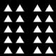
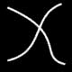
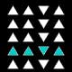
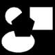

"Die Schönheit einer Sternfigur – eines Sechseck-Sterns etwa – wird beeinträchtigt, wenn man sie symmetrisch bezüglich einer bestimmten Achse sieht."
Ludwig Wittgenstein, 1948. (Vermischte Bemerkungen, p. 135.)
Gestalt perception and its formalization
|
|
||
Wertheimer's thesis: Gestalt perception is determined by several interacting principles, such as: Proximity: O OO OOO OOO OOOOOO OO |
 Proximity |
 Continuation |
 Similarity |
 Closure |
|
ReferencesMax Wertheimer: "Untersuchungen zur Lehre von
der Gestalt." Psychologische Forschung 4 (1923),
pp. 301-350. [English translation of important parts of this paper: "Laws
of Organization in Perceptual Forms." In: W. Ellis: A
source book of Gestalt psychology. London: Routledge & Kegan Paul,
1938, pp. 71-88.] |
||
|
|
|
|
|
|
Jos de Bruin's online SIT-Interpreter applet allows you to play with SIT-codes for discrete lines. [Note that this applet uses the SIT-notation defined in Chapter 2 of Dastani (1998), which is different than the one used in the examples above. Use the button "Auto" to see random examples of codes in that notation.] |
|
Mapping arbitrary input-codes onto their shortest
equivalent SIT-notation is an NP-complete problem. (The computational
complexity is caused by the alternation-operation.) There are two
implemented algrithms that try to meet this challenge. |
|
| Dastani (1998) discusses some fundamental limitations of Structural Information Theory, and tries to overcome some of them. The most important limitations are:
|
|
|
Remko Scha & Jos de Bruin, 2002